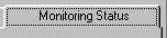
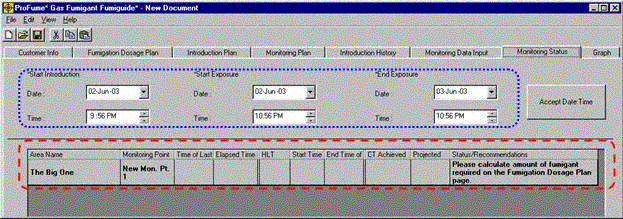
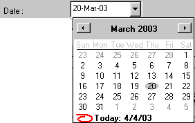
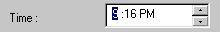
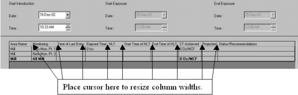
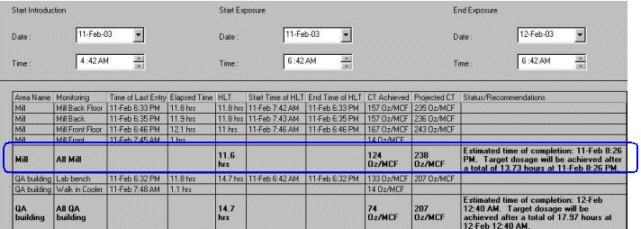
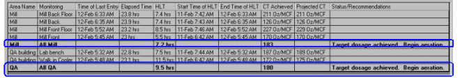
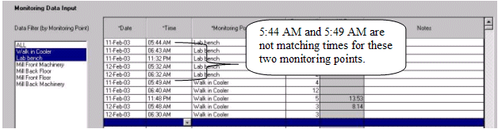
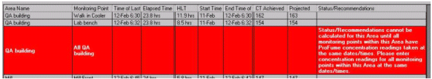

Monitoring Status Tab
Once sufficient monitoring data are entered on the Monitoring Data Input tab, the fumigator can see fumigation status and recommendations on the Monitoring Status tab.

The Monitoring Status tab consists of two sections: user input fields (Start Introduction, Start Exposure and End Exposure) and the Status table. The Start Intro, Start Exposure and End Exposure fields are changeable by fumigator. All of the Status table information is calculated by the ProFume Fumiguide based on monitoring data and the Start Exposure and End Exposure times. Status/Recommendations for achieving the Target Dosage are based on the Fumigation Dosage Plan and monitoring data input into the Monitoring Data Input tab.

These user input field terms are defined below:
Start Introduction is the time when fumigant was introduced into a structure or chamber. Must be before Start Exposure time.
Start Exposure is the time at which the accumulation of CT (dosage) begins. Must be after Start Introduction and before End Exposure. Concentration readings before Start Exposure are not included in the CT accumulation.
End Exposure is the time at which the accumulation of CT (dosage) ends. Must be after Start Exposure. Concentration readings after End Exposure time are not included in the CT accumulation.
Entering Start Intro, Start Exposure and End Exposure
The Date field format is dd:month:yy (e.g. 04-Mar-03). The time field format is hh:mm: AM or PM (e.g. 10:15 AM).
Start Introduction, Start Exposure, and End Exposure Dates and Times must be initially entered in the Monitoring Data Input tab. Start Intro, Start Exposure, and End Exposure Dates and Times must be entered before any monitoring data can be entered. The Dates and Times are then automatically copied from the Monitoring Data Tab into the Monitoring Status tab.
Monitoring data for an Area must have been entered in the Monitoring Data Input tab for any Status/Recommendations to be generated in the Monitoring Status tab.
Changing Start Intro, Start Exposure, and End Exposure
Start Introduction, Start Exposure, and End Exposure Dates & Time can be changed at any time (assuming were initially entered in Monitoring Data Input tab).
Changing the Date or Time for Start Intro, Start Exposure, or End Exposure in either the Monitoring Status tab or Monitoring Data Input tab automatically changes this value in the other tab.
The Date and Time can be changed several ways.
1) Select the day, month, or year in the date field and type the new value.
2) In the Date field, select the arrow at the right to open the scroll bar and bring down a calendar. Select the proper date by clicking on the date.
3) In the Time field, click on the hours, minutes, or AM/PM that you wish to change. Click on the up or down arrows to change the time values.


The Start Exposure and End Exposure times determine the fumigation Exposure Time, and set the time limits over which CT accumulation is calculated.
The duration of the Exposure Time must be the same in the Monitoring Status and Fumigation Dosage Plan tabs for accurate Status/Recommendation instructions.
Note: The Exposure Time should always be the same for both the Fumigation Dosage Plan tab and the Monitoring Status tab. If the of Exposure Time (exposure duration) is changed in the Monitoring Status tab by changing either the Start Exposure or End Exposure time, then the Exposure Time in the Fumigation Dosage Plan tab is changed automatically to match the exposure time in the Monitoring Status tab. Recalculate in the Fumigation Dosage Plan after the Exposure Time has been changed.
Columns in Monitoring Status Table
Columns can be resized by clicking a dividing line between columns in the header row and adjusting to the size desired.

Area Name - Name for the whole structure or an area or subsection of the total structure to be fumigated. Is established in Fumigation Dosage Plan and can only be changed there.
An Area can have more than one monitoring point. Status/Recommendations are presented only by Area, not by individual Monitoring Point.
An "All Area" row is created automatically by the Fumiguide representing the average HLT, CT Achieved, and Projected CT for the monitoring points within an Area. This row has the bolded Area name (circled below) preceded by "All" to designate this is the Status/Recommendation row for this Area.
Status/Recommendations are based on the average of the monitoring point concentrations for that Area. If there is more than one Monitoring Point for an Area, the area name will not be bolded for each monitoring point row.
Monitoring Point - Names for monitoring point, established in Monitoring Plan tab. An Area of the space being fumigated can have more than one monitoring point. In the Monitoring Point average row, the HLT, CT achieved, and Projected CT are averaged and a Status/Recommendation of the monitoring points within an Area, the Monitoring Point name will be "All" followed by the Area name.

Additional terms and definitions on this tab:
Time of Last Entry - The date and time for the last data entry (concentration) for a monitoring point.
Elapsed Time - Number of hours from Start Exposure to Time of Last (fumigant concentration) Entry
HLT - calculated Half-Loss Time from latest peak fumigant concentration to Time of Last Entry. In "All Area" row, the HLT is the average HLT for individual monitoring points within that Area.
Start time of HLT - The most recent time at which the concentration peaked (reached a maximum concentration) for a monitoring point.
End Time of HLT - Time of last concentration reading
CT Achieved - Concentration x Time product achieved from the Start Exposure time to the Time of Last Entry. Pest Exposure to ProFume after the End Exposure Time is not included in the calculated CT Achieved. In "All Area" row, the CT Achieved is the average CT Achieved for individual monitoring points within that Area.
Projected CT - The forecasted CT expected to be accumulated within the planned exposure time based on actual HLT and concentration readings. Assume HLT will remain the same from the last entry to the End Exposure period. Projected CT and estimated time of completion can only be calculated if an HLT has been calculated. In "All Area" row, the Projected CT is the Projected CT for individual monitoring points within that Area.
Status/Recommendations - Short statement of fumigation progress, as of Time of Last Entry, toward reaching Target Dosage. Also, Recommendations on how to achieve Target Dosage. Statements will change as new monitoring data are entered.
Below is an example of the Monitoring Status Tab mid-way through the fumigation. Notice how area HLT, CT Achieved, Projected CT and Status/Recommendations are given as bolded text (circled below).

Status / Recommendation Notes
The Status/Recommendation field will inform you of the progress of the fumigation. The Status/Recommendation field may also direct corrective action such as adding more fumigant or extending exposure time.
No Status/Recommendations will be presented until monitoring data is entered for an Area in the Monitoring Data Input tab. The Status/Recommendations are based on the Target Dosage and the progress of the fumigation to reach the Target CT. Status/Recommendations are Area specific.
Status/Recommendations are based on the latest monitoring data. Thus, Status/Recommendations may change after new monitoring data is input into the Monitoring Data Input tab.
If there is only one Monitoring Point for an Area, the Status/Recommendation will be presented in that individual Monitoring Point row. The Monitoring Point name will be bolded.
If there is more than one Monitoring Point within an Area, an "All Area" row is created automatically by the Fumiguide. This row is designated by the bolded "All [Area name]" in the Monitoring Point column. (See Monitoring Plan tab for the Area/Monitoring Point layout you created). Status/Recommendations are based on the average of the Monitoring Point concentrations for an Area.
If you do not enter a ProFume concentration reading at the Start Exposure or End Exposure times, the Fumiguide will automatically calculate the interpolated concentration reading. This interpolated value will not be displayed.
In order to see the full Status/Recommendations for the Area use the scroll bar at the bottom to scroll to the right of the Monitoring Status section of the window.
Status/Recommendation Messages
If all concentration readings are before the Start Exposure time, then status/recommendation is:
"Fumigant introduction has begun. Exposure period has not yet started."
If the fumigant concentration is increasing, the status/recommendation is:
"Exposure in progress. Projected CT will be calculated when concentration is no longer increasing"
If you have more than one monitoring point within an area, monitoring points dates/times must match for Status/Recommendations to be calculated. The example below shows two monitoring points for one area where the dates and times are not matching.

Below is an example of the Status/Recommendation that will be produced when monitoring point times and dates within an area are mismatched.

"Status/Recommendations cannot be calculated for this Area until all monitoring points within this Area have ProFume concentration readings taken at the same dates/times. Please enter concentration readings for all monitoring points within this Area at the same dates/times.
If the target dosage will be achieved at the planned exposure time (+/- 2% of exposure period), then the status/recommendation is:
"Fumigation is on schedule to achieve Target CT within planned exposure period."
If the target dosage will be achieved ahead of the planned exposure time, the status/recommendation is:
"Target CT will be achieved ahead of schedule after a total of {hours required} hours at {date and time}."
If the target dosage will not be achieved as planned, meaning that more time, fumigant or both are necessary to achieve the target dosage, then the initial sentence in the status/recommendation is:
"Target CT will not be achieved as planned."
If extending exposure will achieve the Target CT, and adding fumigant while keeping the same Exposure Time would not exceed the128 oz/MCF(g/m3) concentration limit, then the status/recommendation is:
"To achieve Target CT add more ProFume or extend Exposure period. Add {quantity of fumigant} of ProFume to reach new target concentration of {new target concentration}, or extend exposure to a total of {hours} hours, until {date & time}."
If extending exposure, without adding more fumigant will achieve the Target Dosage, and adding fumigant and keeping the same exposure time would exceed the 128 oz/MCF (g/cu m) concentration limit, then the status/recommendation is:
"To achieve Target CT you will need to extend exposure period. Option #1: Extend exposure to a total of [required # of hours] hours, [date and time target dosage achieved] Option #2: If Exposure Period cannot be extended, you may add [amount of ProFume] of ProFume to reach maximum permitted target concentration of 128 [metric units g/cu m; English units - oz/MCF], which may not achieve the Target CT."
If extending exposure, without adding more fumigant, will not achieve the Target CT, and adding fumigant and keeping the same exposure would not exceed the 128 oz/MCF (g/cu m) concentration limit, then the status/recommendation is:
"ProFume concentration is too low to achieve Target CT simply by extending the Exposure Period. Option #1: To achieve Target CT within planned exposure period, add [amount of ProFume] of ProFume to reach new target concentration of [new target concentration]. Option #2: Extend the Exposure Period, and then see new Status/Recommendation for add-gas instructions. "
If extending exposure, without adding more fumigant, will not achieve the Target CT, and adding fumigant and keeping the same exposure time would exceed the 128 oz/MCF (g/cu m) concentration limit, then the status/recommendation is:
With present Exposure Period, adding more ProFume to achieve Target CT will exceed maximum permitted target concentration of 128 [metric units g/cu m; English units - (oz/MCF)]. Option #1: Extend exposure period, then see new Status/Recommendation instructions. Option #2: If the Exposure Period cannot be extended, add [amount of ProFume] of ProFume to reach maximum permitted target concentration of [new target concentration], which may not achieve the Target CT."
If less than 1 hour left in Exposure Period cannot calculate add-gas instructions because Fumiguide assumes it takes one hour to introduce fumigant.
"At least 1 hour must be remaining in Exposure Period to calculate add-gas instructions. To achieve Target CT by adding more ProFume, extend Exposure Period. ".
If Target CT has been achieved, then the status/recommendation is:
"Target CT achieved. Begin aeration."
If monitoring data is recorded for after the End Exposure time, then the status/recommendation is:
"Monitoring data after the End Exposure time is not included in the CT calculation."